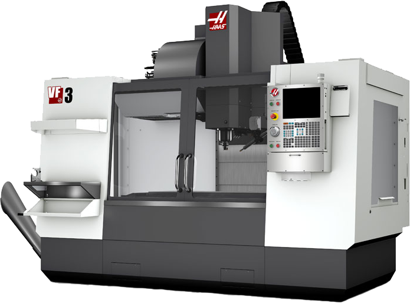

-----
I made a 3d printer before it was cool, a Reprap Mendel, when those were new. The challenges with its design made me wish I had made a laser cutter table instead, constantly having to micromanage it got tedious fast. Over the years it printed a lot of cool stuff, like the flashlight holder I designed that attached the moon roof with magnets. It let me shine my light around in the rain driving pizza. However, it needed slightly stronger magnets to be really great. The magnets of the angle controller would decouple and it would be stuck pointing too far down to reset without opening the moon roof a little.
I'm pretty confident with CAD, and I fancy myself a mechanical engineer, though I haven’t finished any formal training. College and working 50 hour weeks to make ends meet at the same time didn’t add up to success for me. DevCodeCamp coding bootcamp has been great, the pacing keeps me fully engaged and I can immerse in one subject instead of having to scatter around campus wearing 12 different hats.
I am pretty well read and hope George R.R. Martin quits dinkin’ around and finishes those books. My favorite author is Terry Pratchett, he is the greatest author of our time, bar none. If you disagree, you probably haven’t read him, or you don’t like fun. Non-fiction books are for nerds, go outside and learn firsthand or use the internet.
I have worked all types of jobs in many industries.
The most interesting job I have held was Junior Radiation Protection Technician in nuclear power plants. It was nearly wizardly, spending all day searching out invisible energy with seemingly ancient tools. (Some of the detectors are quite weather-beaten and still in use from the 70s.) I learned how long hours week after week makes even the kindest gentleman into a cranky lion, ready to bite your head off.
Changing plant conditions during outage meant that I had to pay attention during even mundane tasks. I never knew when a random pipe would be nearly glowing, or which wrench I was clearing from the contaminated areas would set off alarms on the fancy machines ten feet behind my station.
Unfortunately, nuclear stories are incredibly boring to the uninitiated. I’ll move on and just say; if you find radiation interesting, ask me the questions. I know most of the theory and some reality, and I like to talk about it.
The pay was great, the traveling was hard, and the hours were terrible. At the end of a contract, I came home exhausted to find that the world back home had forgotten me. Friends had new hangouts, girlfriends got lonely while I was away. It became pretty clear why all the old dudes I worked alongside had all been divorced three times. The work life balance is worse than terrible, abombinable. I learned to value that and got away from the industry just short of my Senior RadPro certifications.
As a pizza delivery driver, I met many people from all walks of life and many diverse circumstances. I met people on their best day and their worst. It was a rewarding and interesting time, everyone has a kind word for the man with the food.
Every day took me somewhere new. Sometimes, every once in a while, truly interesting and new adventures unfolded. I’ve been saved by heroes who honked their horn at just the right moment to catch my attention when I needed to be aware. I have cursed those who’s impatience or negligence put my own life at risk.
Once, I stopped a purse snatcher, tripped him with the door of my car, just like in the movies. Another time I defended myself from a drunk mugger at a hotel. He didn’t know that you can’t tackle a dude wearing heelies on flat ground. We just slide while you overextend your balance and fall at our feet. That dude also learned that punching the top of someones head breaks your hand.
I chased the beautiful girl, and gained a nemesis who stopped my greatest play with low-down dirty tricks. I learned some people are just in it for the attention, made friends with my still hopeless nemesis, and learned that working hard for low wages will never get me ahead.
In my youth, both cooking and serving food at a restaurant helped me get over my shy nature and embrace the public. I polished social skills that had eluded me, and by the end of high school, I was king of the nerds.
From there and still on occasion when times are tight I do in home technical support, and I learned to never underestimate the ineptitude of users at a very young age.
My grandfather taught me how to build a home from scratch, and how to peel back the floorboards without fear that I might not be able to put them back. I learned plumbing, electrical, and how to hide the not quite up to code stuff where the electrician can’t get to it for inspection. We did it all, from digging and pouring the foundation to insulation and shingles.
Rest in peace, old man. You’ve earned it.
My father did the same with cars, he taught me to take an engine apart to the bolts, and gave me the confidence to put it all back together again. I learned that sometimes you just gotta get the torch and the really big hammer.

Factory work taught me the satisfaction of a hard day’s labor, and when to say no to a boss with expectations that are silly or unrealistic, To speak up when my needs are not being met, and when to threaten to ring up OSHA.
The machine shop I worked at hammered home how tightly controlled some environments are, and just how much technology we stand on the backs of. CNC mills are cool and dangerous beasts that will blow up if you don’t take care and respect them. I also learned the value of proper training, because there is always something you won’t know to keep an eye on if you aren’t warned.

I’m a well rounded, social individual. My greatest flaw is that have come to view political correctness as a slow poison that neuters the critical thought of an individual. Don’t get me wrong, I am polite, and I find real value in polite behavior. However not calling a ball-cap a hat in favor of calling it an enhanced sun-visor, or some other negligent lingual nonsense, is just bad language specificity. I have a moral problem with the codifying of being nice to people into law. It is a perversion of our constitutional rights. It’s tantamount to mind control, and I can’t abide the concept, but I am still a kind and polite guy.
In summary, I have done it all already, and have been interested in robotics since I was just a lad. So here I am, ready to program.
Motors and controls for the fancy machines I make my hobby are not going to buy themselves. At least not till I get through the prototyping phase and actually sell a product.